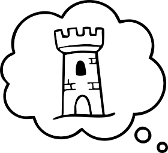
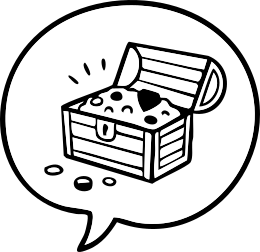
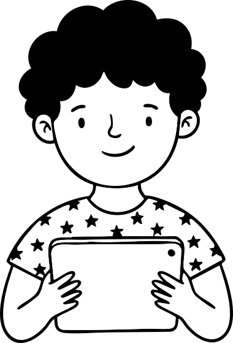
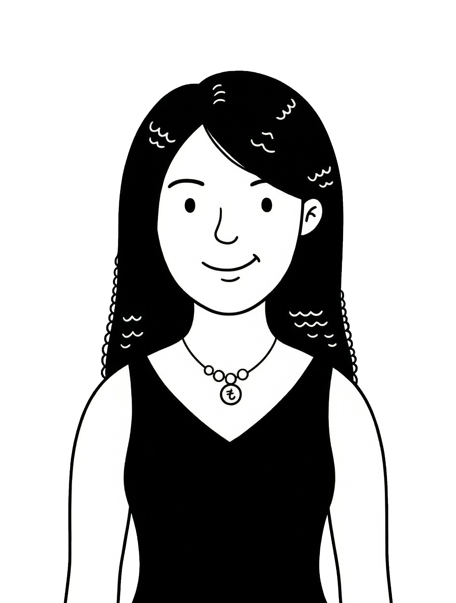
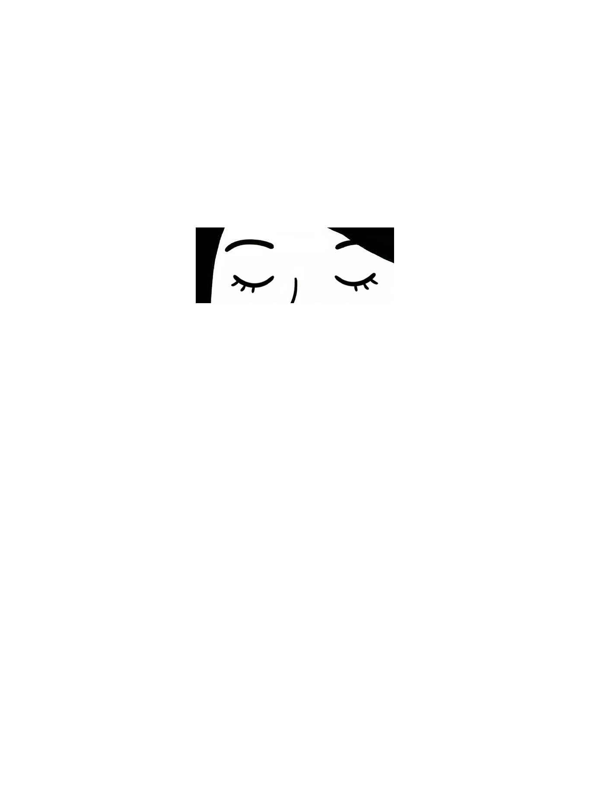
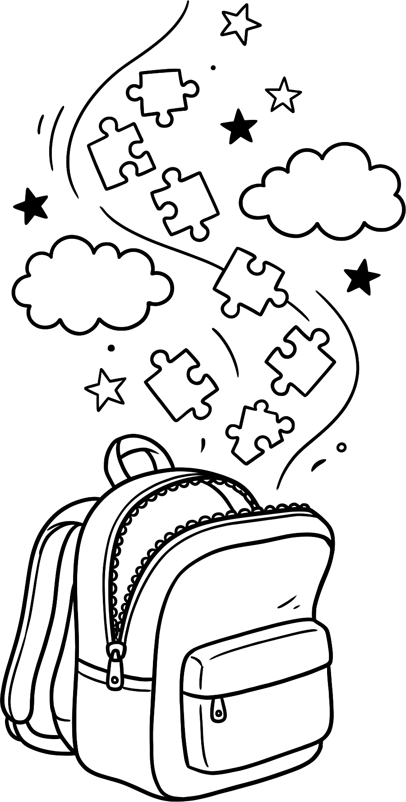
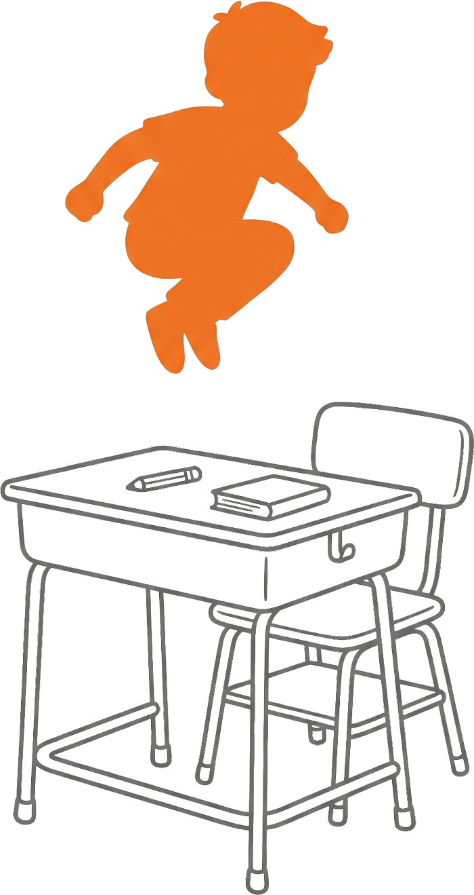
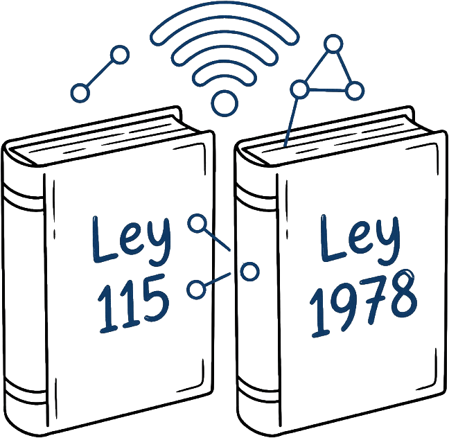

Marco de Referencia:
El Corazón del Laboratorio Pedagógico Virtual
Sustento legal, teórico y conceptual del uso de Wordwall en el Colegio Colombo Inglés.



Identificando la problemática y definiendo los objetivos del proyecto a través de avatares interactivos y un póster digital.
Presentación del equipo de trabajo, el título del proyecto y los directores de investigación.
Expone la problemática identificada: la reducción del uso del juego en las aulas de primer grado debido a enfoques tradicionales y presiones curriculares.


El juego es un derecho fundamental reconocido por la UNESCO, esencial para el desarrollo integral en la primera infancia.

La Maleta de Ilusiones
Se hace imperativo combatir la "quietud" de los métodos tradicionales en el Colegio Colombo Inglés para despertar la motivación en primer grado.

El Salto de la Tradición
Analizar el impacto del uso del juego, apoyado en la web Wordwall, en el rendimiento de la competencia comunicativa de los estudiantes de grado primero.
Evaluar el estado inicial de la competencia comunicativa (Pre-test).
Crear secuencias didácticas gamificadas en entorno interactivo.
Aplicar las estrategias lúdicas en el aula de clases.
Medir el impacto cualitativo final tras la implementación (Post-test).
Marco de Referencia: Explorando el sustento teórico, normativo, y conceptual a través del E-book interactivo.

Sustento legal, teórico y conceptual del uso de Wordwall en el Colegio Colombo Inglés.
La investigación se sitúa en el Colegio Bilingüe Nacional Colombo Inglés en Neiva, Huila (Comuna 10). Es una institución de alta calidad con una planta física campestre de 30,000 m², enfocada en un modelo pedagógico afectivo y bilingüe.
Haz clic en los videos para descubrir más sobre el colegio donde se desarrolla este proyecto de investigación.
Nos amparamos en la Ley 115 de 1994 para la autonomía curricular y el Decreto 1290 para una evaluación formativa.
La Ley 1978 de 2019 respalda nuestra autonomía para integrar recursos digitales como Wordwall.

Basado en el Constructivismo de Piaget y Vygotsky, donde el juego es el mediador para transitar por la zona de desarrollo próximo.
Integramos la Gamificación para transformar el aula en un espacio de motivación intrínseca.
Ver página UNICEFEscucha nuestra reflexión pedagógica.
Portafolio Digital — Universidad de Cartagena
© 2026
Haz clic en las páginas o arrastra para pasar. También puedes usar las flechas.